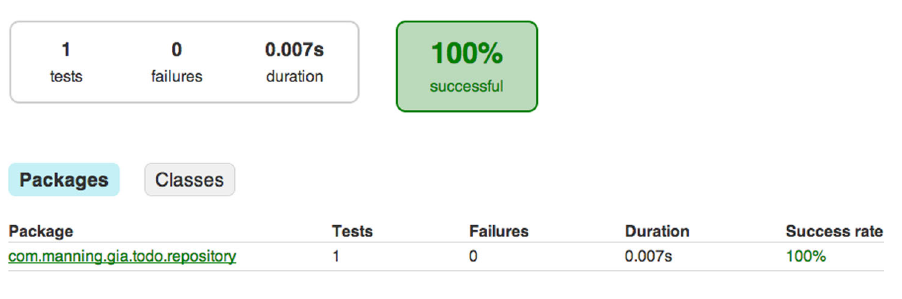

单元测试
作为一个Java开发者，你有很多个测试框架可选，这一节我将介绍传统的JUnit和TestNG,如果你没有接触过这些框架，你可以先看看他们的在线文档。
使用JUnit
你将给你之前的ToDo应用的存储类InMemoryToDoRepository.java编写单元测试，为了突出不同框架的相同和不同之处，所有的单元测试都会验证同一个类的功能。接下来你给子项目repository编写测试，放置测试代码的正确位置是在测试的标准布局里，在src/test/java目录下创建一个名叫InMemoryToDoRepositoryTest.java的类，你可以学习测试驱动开发的相关理论，在代码中添加适当的断言语句，下面这段代码用来测试插入功能的正确性。
import com.manning.gia.todo.model.ToDoItem;
import org.junit.Before;
import org.junit.Test;
import java.util.List;
import static org.junit.Assert.*;
public class InMemoryToDoRepositoryTest {
private ToDoRepository inMemoryToDoRepository;
//用这个注解标识的都会在类的所有测试方法之前执行
@Before
public void setUp() {
inMemoryToDoRepository = new InMemoryToDoRepository();
}
//用这个注解的都会作为测试用例
@Test
public void insertToDoItem() {
ToDoItem newToDoItem = new ToDoItem();
newToDoItem.setName("Write unit tests");
Long newId = inMemoryToDoRepository.insert(newToDoItem);
//错误的断言会导致测试失败
assertNull(newId);
ToDoItem persistedToDoItem = inMemoryToDoRepository.findById(newId);
assertNotNull(persistedToDoItem);
assertEquals(newToDoItem, persistedToDoItem);
}
}
接下来你需要在依赖配置中添加JUnit的依赖：
project(':repository'){
repositories {
mavenCentral()
}
dependencies {
compile project(':model')
testCompile 'junit:junit:4.11'
}
}
之前我们讲过test任务会先编译源代码，生成Jar文件，然后编译测试代码最后执行测试，下面的命令行输出显示了有一个断言出错的情况：
$ gradle :repository:test
:model:compileJava
:model:processResources UP-TO-DATE
:model:classes
:model:jar
:repository:compileJava
:repository:processResources UP-TO-DATE
:repository:classes
:repository:compileTestJava
:repository:processTestResources UP-TO-DATE
:repository:testClasses
:repository:test
com.manning.gia.todo.repository.InMemoryToDoRepositoryTest
> testInsertToDoItem FAILED//出错方法的名字
java.lang.AssertionError at InMemoryToDoRepositoryTest.java:24
//测试结果概括
1 test completed, 1 failed
:repository:test FAILED
FAILURE: Build failed with an exception.
* What went wrong:
Execution failed for task ':repository:test'.
> There were failing tests. See the report at:
➥ file:///Users/ben/dev/gradle-in-action/code/chapter07/junit-test-
➥ failing/repository/build/reports/tests/index.html
从输出可以看出一个断言失败了，这正是你想看到的，显示的信息并没有告诉你为什么测试失败了，指示告诉你第２４行的断言失败了，如果你有很多个测试，你需要打开测试报告才能找到出错的原因，你可以在任务使用-i选项打印日志输出：
$ gradle :repository:test –i
...
com.manning.gia.todo.repository.InMemoryToDoRepositoryTest
> testInsertToDoItem FAILED
java.lang.AssertionError: expected null, but was:<1>
at org.junit.Assert.fail(Assert.java:88)
at org.junit.Assert.failNotNull(Assert.java:664)
at org.junit.Assert.assertNull(Assert.java:646)
at org.junit.Assert.assertNull(Assert.java:656)
at com.manning.gia.todo.repository.InMemoryToDoRepositoryTest
➥ .testInsertToDoItem(InMemoryToDoRepositoryTest.java:24)
...
在堆栈树我们可以找到出错的原因是newId的值我们假定是null的实际上为１，所以断言出错了，修改之后再运行可以看到所有测试都通过了：
$ gradle :repository:test
:model:compileJava
:model:processResources UP-TO-DATE
:model:classes
:model:jar
:repository:compileJava
:repository:processResources UP-TO-DATE
:repository:classes
:repository:compileTestJava
:repository:processTestResources UP-TO-DATE
:repository:testClasses
:repository:test
Gradle可以生成更加视觉化的测试报告，你可以在build/reports/test目录下找到HTML文件，打开HTML文件你应该可以看到类似这样的东西：

使用其他测试框架
你可能在你的项目中想使用其他的测试框架比如TestNG和Spock
使用testNG
比如你想用testNG来编写相同的测试类，相似的，你用testNG指定的注解来标识相应的方法，要想你的构建执行testNG测试，你需要做两件测试：
- 声明对testNG库的依赖
- 调用Test#useTestNG()方法来声明测试过程使用testNG框架
如下图所示来配置脚本文件：
project(':repository'){
repositories {
mavenCentral()
}
dependencies {
compile project(':model')
testCompile 'org.testng:testng:6.8'
}
//设置使用testNG来测试
test.useTestNG()
}